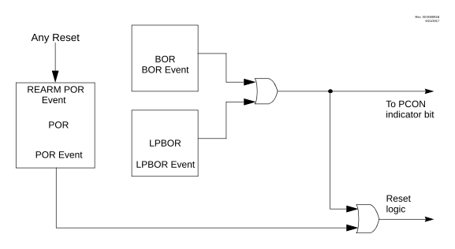

The Low-Power Brown-out Reset (LPBOR) provides an additional BOR circuit for low-power operation. Refer to the figure below to see how the BOR interacts with other modules.
The LPBOR is used to monitor the external VDD pin. When too low of a voltage is detected, the device is held in Reset.
